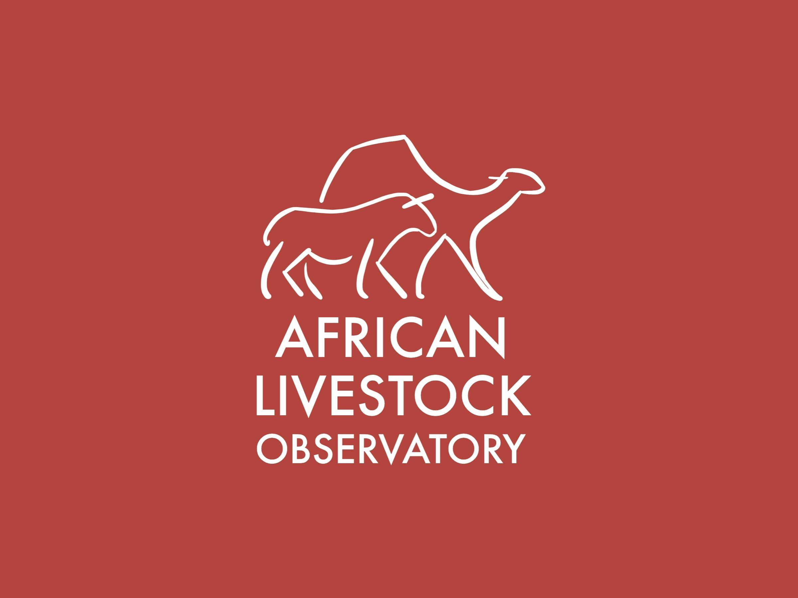
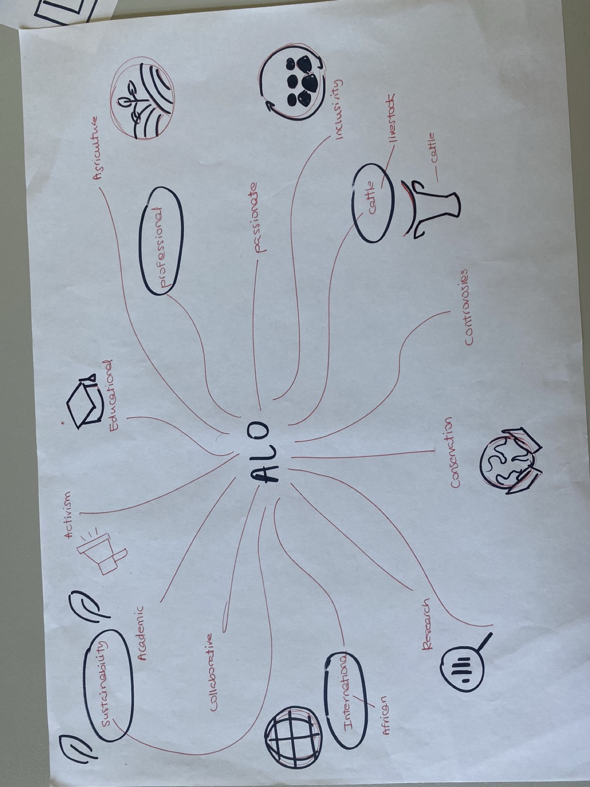
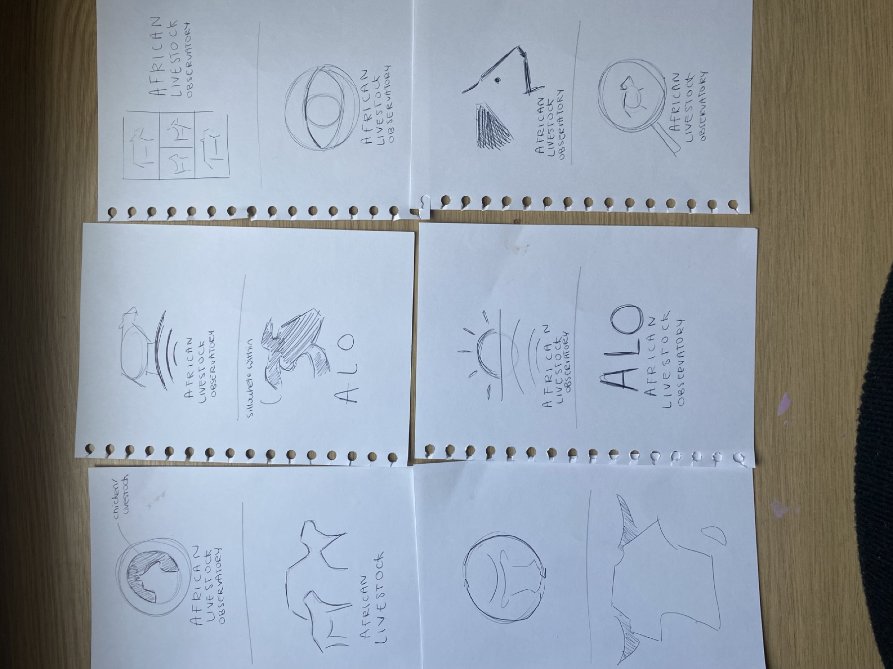
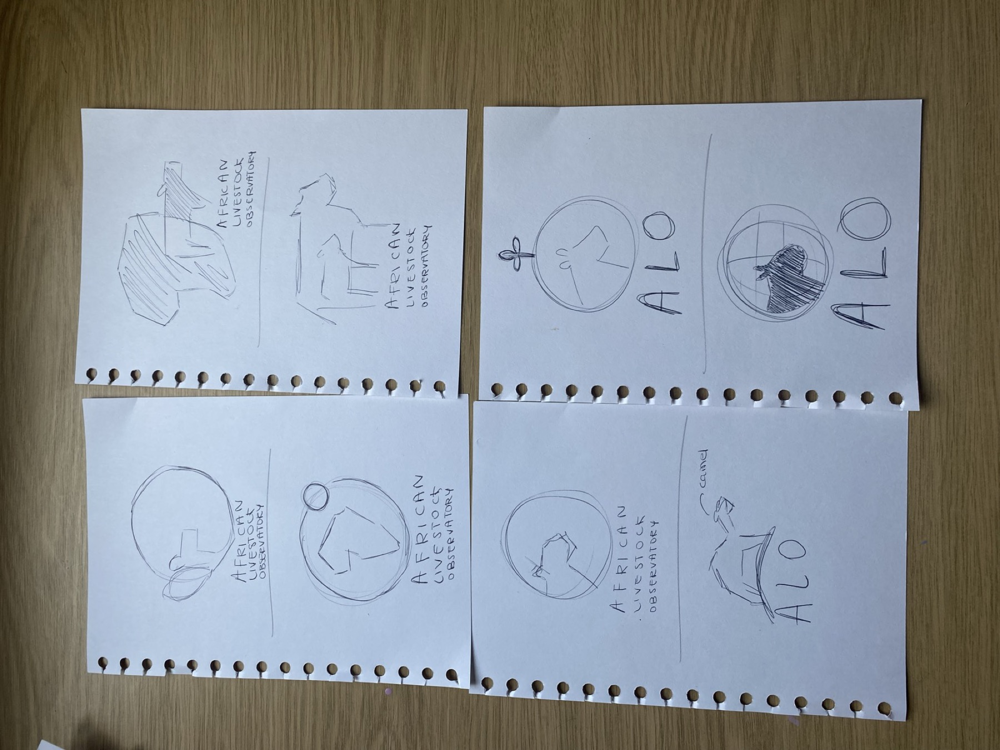
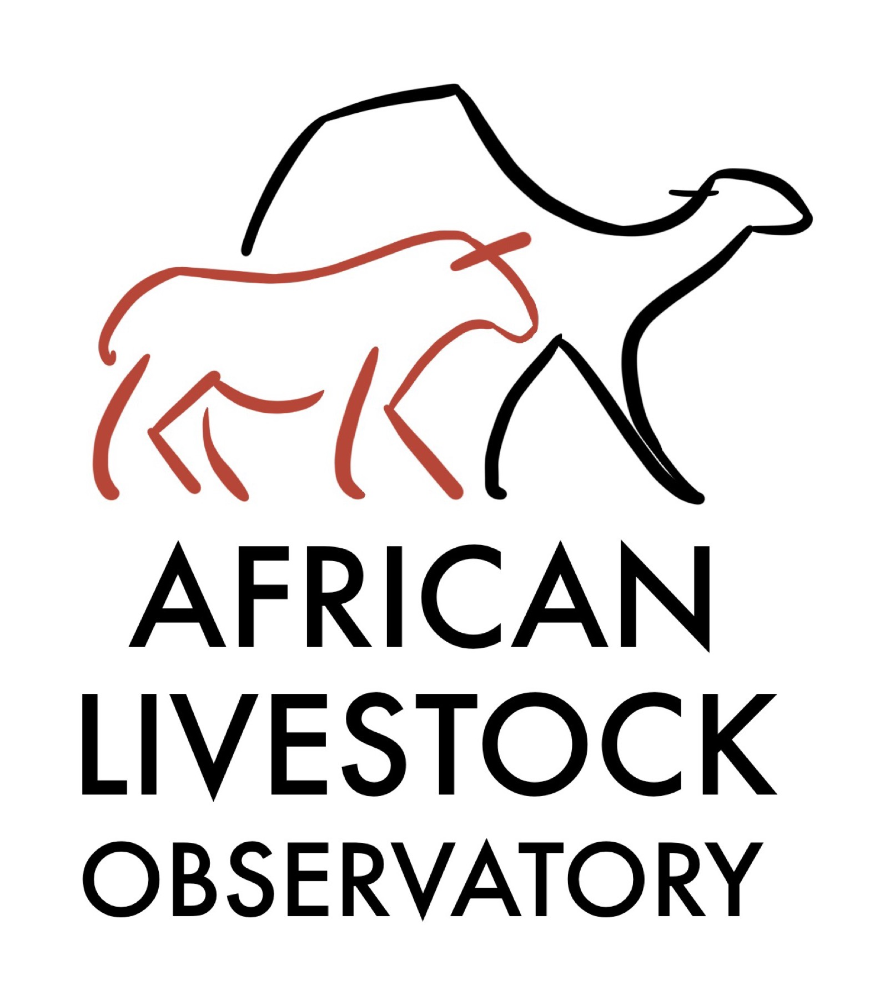
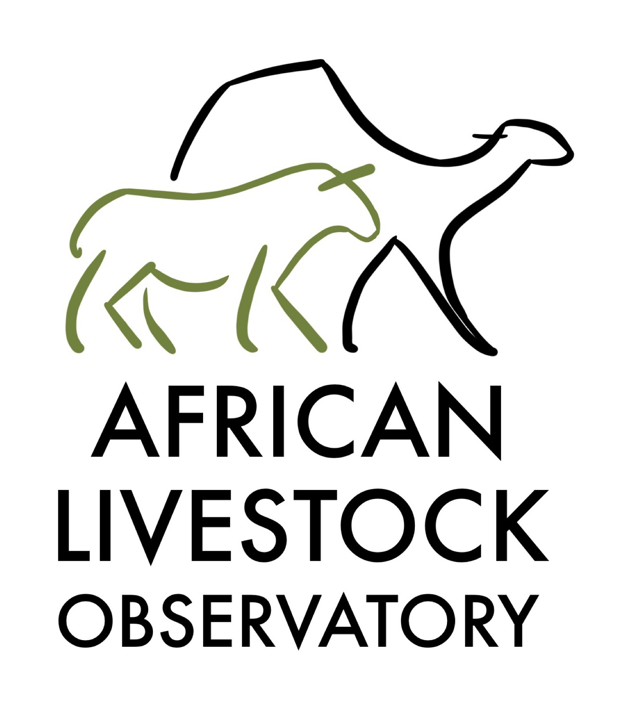
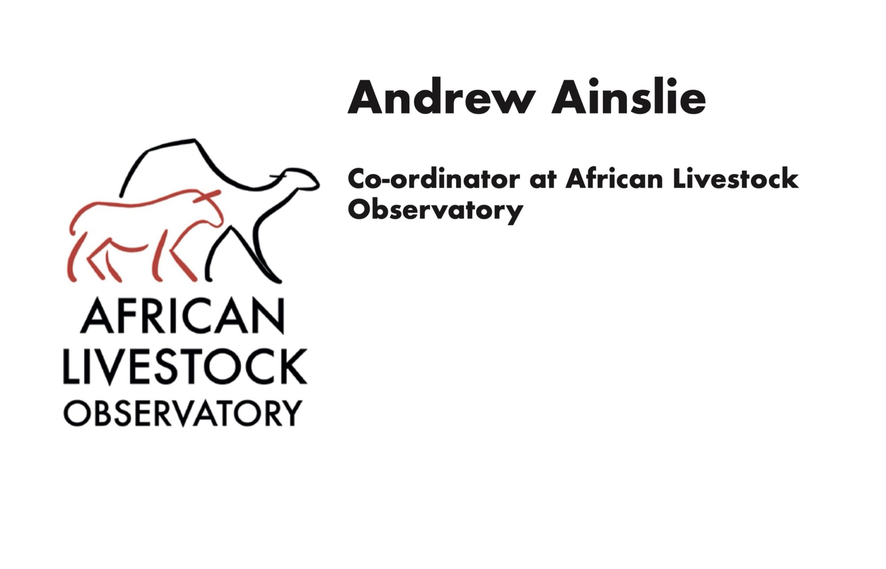
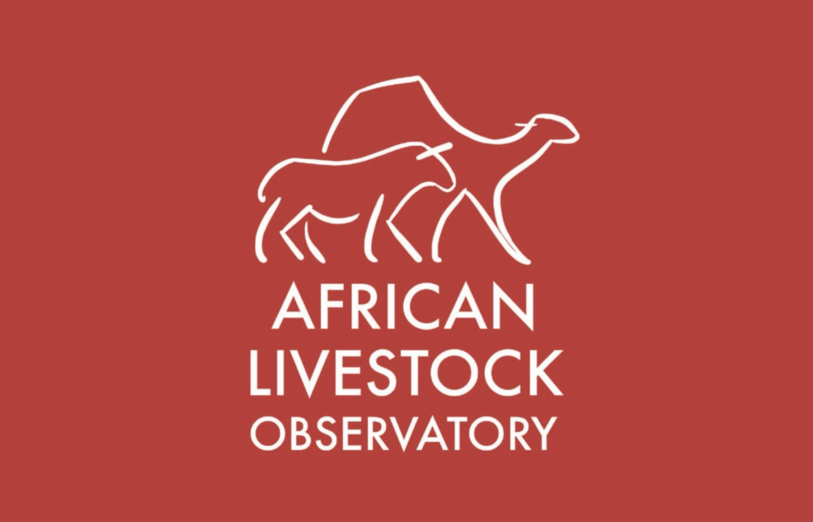

Case Study 02 — Logo & Identity
A logo for a new University of Reading research hub on the changing role of livestock in Africa. The client chose my design to take forward.

The African Livestock Observatory is a new hub at the University of Reading for research and writing on the changing role of livestock across Africa, from cattle and goats to camels. It launches officially in 2026, the university's centenary and the UN International Year of Rangelands and Pastoralists. Its aim is to amplify African voices in global debates on climate, biodiversity and animal health.
The client asked for a logo that was “on trend, immediately recognisable, distinct, simple but effective” and would work everywhere from LinkedIn and email signatures to conference signage and a small lapel badge.
I started by mapping out what the ALO stands for, picking out sustainability, inclusivity, professionalism and an international, African focus. From there I filled pages of quick pencil sketches, trying symbols like the African continent, the sun, an eye for “observatory”, and the animals themselves.



The final mark uses loose, hand-drawn lines to show a camel overlapping a smaller horned animal, standing for the range of livestock the observatory covers. I drew the animals by hand in Procreate, then worked the logo up in Photoshop and InDesign. It sits above a bold sans-serif wordmark in one solid colour, so it stays clear and professional at any size. I developed two colourways: an earthy red and an olive green.


I applied the logo to a double-sided business card, printed on card stock and trimmed by hand: a clean white front with the client's details, and a bold red back with the logo reversed out in white.


The client chose my logo from the class proposals to take forward, and it was set to become a real, paid commission. I'd already committed to work over the summer, so I couldn't take it on, but having my design picked for a real organisation was a great first step into client work.
Get in touch